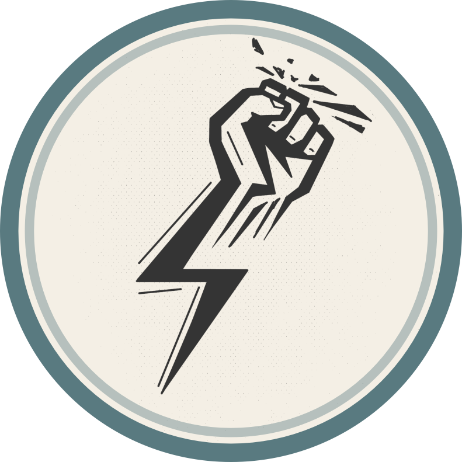
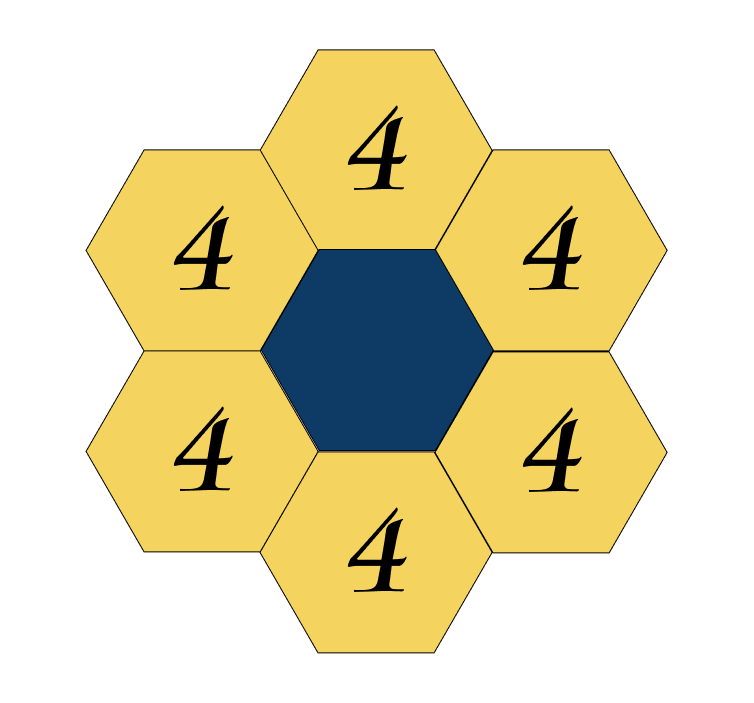
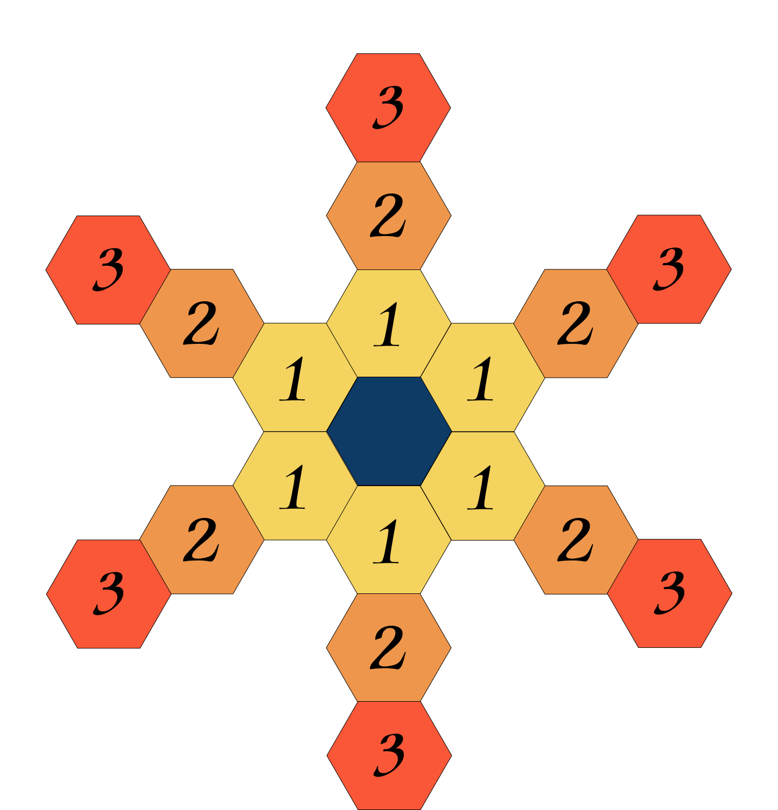
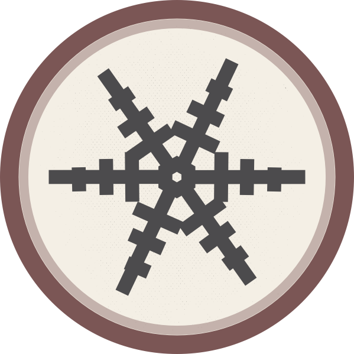
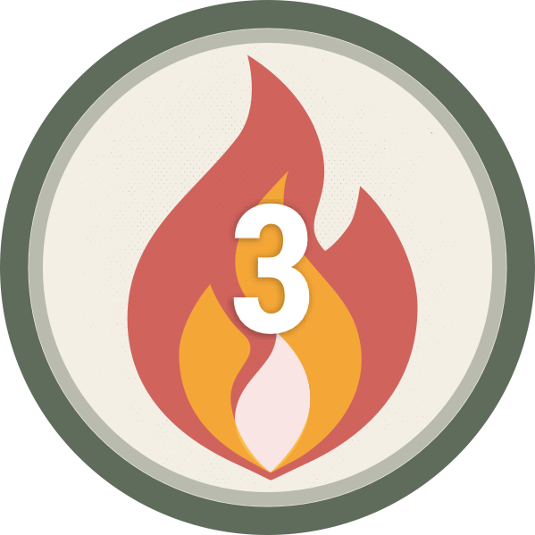
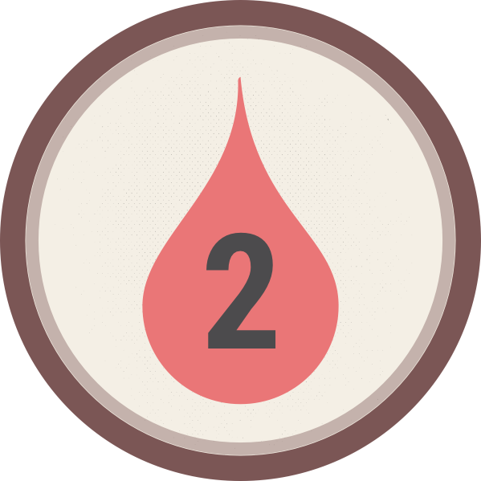

Game Components
General Information
Pantheon of Nations is a strategic game set in a fantasy world. Players choose one of the nations. Each nation is led by a deity who has taken the physical form of an avatar. In addition to avatars, the battle involves followers – brave mortal warriors ready to give their lives for their deity. Each nation has unique mechanics, marked in the rules with its corresponding color ( dark red for Japan, light orange for Vijayanagara, blue for Nomads, green for Aztecs ).
Game Objective
The objective of the game is to be the last surviving avatar - or part of the last surviving team - on the board. When an avatar's health drops to 0, the controlling player is immediately eliminated from the game, and all their followers are removed from the battlefield. Depending on the game mode, a different number of players participate in the confrontation.
In a 4-player game, players are divided into two teams of two. In this mode, victory is achieved when both avatars of the opposing team are eliminated - meaning one or two allied avatars may remain on the board.
Game Modes
- 2 Players - Duel: A head-to-head battle where each player fights to be the last surviving avatar on the board.
- 3 Players - Skirmish: A free-for-all where each player competes independently. The last surviving avatar wins.
- 4 Players - Team Battle: Players are split into two teams of two. When both avatars on a team are eliminated, that team loses - the surviving team wins the game.
Game Terms
- Avatar: The physical embodiment of a deity.
- Followers: Warriors representing various nations.
- Unit: Both an avatar and a follower.
- Line of Sight: A straight line between the unit using an ability and the target, not obstructed by other units and not extending beyond the boundaries of the game board.
- Arcing Shot: A straight line that is not obstructed by other units (archers attack along such a trajectory).
Game Setup
General Setup
- Place the game board in the center of the table, choosing the correct side based on the number of players.
- Place the Blessing Board next to the main board.
- Shuffle the Blessing deck and place it on the Blessing Board. Fill all Blessing slots except the active slot.
Player Setup
- Each player selects a civilization and takes its nation board, avatar miniature, follower tiles, ability cards, order tokens, status tokens, Faith tokens, health and initiative markers.
- Each player takes one passive (triggered) ability card and selects three active ability cards. Place them face up near your nation board. Sum the Attack values in the bottom-right of each ability card and place your Attack marker on that value on your nation board.
- Place your Health marker at 15 HP for 2-player games, 13 HP for 3-player games, and 12 HP for 4-player games.
- Keep your order tokens, status tokens, and Faith tokens next to your nation board.
- Place your avatar miniature on the starting hex.
- Follower setup varies by faction (see below).
Faction-Specific Setup
- Vijayanagara: Place the Elephant’s health marker at 7. Place all unit tiles next to your nation board. The Elephant may carry a foot follower.
- Japan (Yamato): Japan has three special followers: Kamuso, Daimyo, and Shinobi. Choose one stat card for each of them (matching the name in the top-right corner), return the rest to the box. Place Daimyo’s health marker on the track, and arrange the selected stat cards beside the nation board.
- Nomads: Place all unit tiles next to your nation board.
- Aztecs: Place follower tiles according to the faction layout:
– Bottom row: Cuextecatl
– Middle: Butterfly Warriors
– Top (two adjacent stacks): Eagle Warriors and Jaguar Warriors.
Final Setup
- Determine turn order randomly. Each player places their initiative marker on the initiative track.
- Starting with the first player, each player places two followers on hexes adjacent to their avatar.
You are now ready to begin the game.
Phases
The following rules describe gameplay for 2 players. All differences for other player counts are described later.
Zero Round
The Zero Round skips the Betting Phase, Planning Phase, and End of Round Phase. Each player, in turn order, performs one action with each unit without placing an order token. Only Movement and Recruit actions are allowed.
1. Betting Phase
Each round, all players receive 5 Faith tokens. These tokens do not carry over — each round begins with a fresh set of 5 tokens per player.
To determine turn order, each player secretly places any number of Faith tokens into a closed fist — this is their bid. Once all players are ready, fists are revealed simultaneously.
- The player with the highest bid becomes the first player.
- Other players take their turns in descending order of their bids.
- In case of a tie, tied players act in reverse order from the previous round.
Blessing Track
After turn order is set, the first player interacts with the Blessing Track:
- Select one of the three Tier I Blessing cards to activate for the round.
- Move one of the two Tier II Blessing cards up to Tier I to refill the slot. This card will be available next round.
Blessing cards remain active for the entire round. They grant strong advantages to the first player and may change core game mechanics.
2. Planning Phase
In this phase, each player must assign exactly one order to one unit.
- For followers, order tokens are placed directly on their tiles on the board.
- For avatars, order tokens are placed on their portrait on the Nation Board.
Players assign orders in initiative order, one by one.
Using Faith Tokens
- Orders are paid using Faith tokens remaining after the Betting Phase.
- 1 Faith token allows you to place 1 order token.
- Faith tokens may also be spent to remove Status Effects: each token removes one Status Effect token from a friendly unit.
- Once a player runs out of Faith tokens, their Planning Phase ends.
Note: A unit may not receive more than one order per round.
Types of Orders
The following orders are available:
- Movement
- Recruit
- Attack
- Blood Shield
- Ability
Each order type is explained in detail in its respective section below.
3. Action Phase
In initiative order, players take turns revealing and resolving one of their order tokens at a time.
- On their turn, a player may choose any of their unrevealed order tokens to resolve.
- The order of execution does not need to match the order in which the tokens were placed during the Planning Phase.
- After resolving one order, the turn passes to the next player in initiative order.
- This cycle continues until all order tokens on the board have been resolved.
- If a player has no remaining order tokens, they skip their turn.
Blessing cards and abilities may modify how orders are executed or interact with turn structure.
End of Round
- All status effects trigger at this time, potentially causing events or conflicts (e.g., multiple avatar deaths), which are resolved in initiative order.
- All ability cards on the Cooldown Track move one space to the left.
- The active Blessing card is discarded.
- A new round begins, starting with the Betting Phase.
Order Types
Movement
Movement allows units to travel from one hex to another. Each unit can move a different number of hexes, but always at least one. Units cannot move through other units, whether friendly or enemy.
- Foot followers move 1 hex.
- Mounted followers move up to 2 hexes.
- Avatars move up to 3 hexes.
A special unit is the Vijayanagara Elephant. A foot follower can be placed on top of its tile:
- This can be done using a Movement action by the follower or during a Recruit action.
- The elephant and the follower on it move together and count as a mounted follower.
Recruit
The "Recruit" order allows a player to place a new follower on the battlefield. Tiles may only be placed on:
- The starting hex
- The two adjacent hexes marked with color
New units may only be placed on unoccupied hexes.
Attack 
The primary way to deal damage.
Swordsmen: Deal 4 damage to adjacent hexes (melee combat).
Example: A swordsman stands next to an enemy and deals 4 damage.
Spearmen: Deal 2 damage to the adjacent hex and the one behind it. This is piercing damage — all units on those hexes receive the damage, even allies.
Example:
- Hits the adjacent enemy.
- Hits the unit behind.
- If one of them is an ally, they take damage too.
Archers: Deal damage based on distance:
- 3 hexes — 3 damage
- 2 hexes — 2 damage
- Adjacent — 1 damage
Archers attack using a arcing shot, so line-of-sight rules do not apply.
Avatars: Can attack only adjacent hexes. The type and strength of the attack depend on the ability card used.
Phantom Targets: You may target phantom (empty) hexes to avoid damaging friendly units or triggering Blood Shield effects.
Example: A swordsman attacks an empty hex to avoid harming an ally.
Tracking Health:
- Follower health is shown at the bottom edge of the tile.
- When taking damage, rotate the tile to indicate the new health value.
- Orientation is determined using the alignment line on starting hexes.
- Health for Avatars, the Elephant, and the Daimyo is tracked on the Nation Board.
Blood Shield 
The Blood Shield allows you to turn the enemy’s attack against them.
- If a unit with a Blood Shield token is attacked, the token is revealed.
- The attacker takes the damage they would have dealt.
Important: The Blood Shield does not protect against abilities unless the ability specifically says it performs an "Attack".
- A player cannot reveal the shield voluntarily.
- If a player has no remaining unrevealed order tokens except Blood Shield, the token is revealed.
- The unit with the shield takes damage equal to its own Attack value.
- Archers take 2 damage when their Blood Shield is triggered.
Ability
There are two types of abilities: active and triggered.
- Triggered abilities do not require a token to activate. They are triggered automatically or at the player's discretion when certain conditions are met (e.g., performing a Recruit action, an enemy entering a designated zone, or a unit's death).
- Active abilities require placing an Ability token on the avatar’s portrait on the Nation Board during the Planning Phase.
During the Action Phase, the player may resolve an available Ability card (i.e., one not on cooldown track). After use, the Ability card is placed onto the Cooldown Track, occupying the slot that corresponds to its cooldown value.
Special Rule - Yamato: Some Yamato followers can use Ability orders. To do so, place an Ability token on the follower's tile during the Planning Phase. This allows them to use their unique Ability during the Action Phase instead of the avatar.
Ability Targeting Types
- Line of sight: A straight line blocked by any unit — if a unit (friendly or enemy) stands between the source and the target, it becomes the new target.
- Arcing shot: A straight line that is not blocked by units. Archers use this type of trajectory.
- Any target: The ability may target any unit within range, regardless of obstacles or line shape.
Some abilities affect multiple hexes simultaneously. These abilities display a pattern showing the area of effect. The pattern may be rotated or mirrored, and may partially extend off the board.
- White hex: Position of the casting unit.
- Red hexes: Targeted area. Friendly units in red hexes also take damage.
Special Ability Types
- Electricity X: Deals X damage to a unit, then chains to adjacent units, each taking 1 less damage than the previous. Max chain length = X. Each unit can only be affected once per chain.
- Status Effects: Some abilities apply special status tokens to units (see below).
- Multi-strike: Perform an Attack X times.
- Piercing attack: Hits multiple hexes in a straight line, damaging each.
- Push / Pull: Move a chosen unit up to X hexes toward or away from the caster. Then deal damage equal to the number of hexes moved.
Status Effects
- Ice: Place X Ice tokens on an enemy unit. While at least one token remains, the unit cannot receive orders. Remove one Ice token at the end of each round. A player may also skip an order to remove one Ice token. If the unit already has an order token, it stays and activates once Ice tokens are gone.
 - Fire: Fire tokens may be placed on units or hexes. If a unit steps on a Fire hex, the token moves to the unit. At the end of the round, each Fire token deals X damage and is discarded.
 - Bleed: Place a Bleed token on a unit. After that unit resolves any order, it takes X damage and the token is discarded. Only one Bleed token triggers per order. Multiple tokens may exist on one unit.
 - Blight: Place X Blight tokens on an enemy unit. At the end of each round, the unit takes damage equal to the number of tokens, then remove one. Damage decreases each round until all tokens are gone.
Note: If a player is eliminated, the status effects they applied remain on the board.
FAQ Highlights
- Teleport is not movement.
- Blood Shield doesn't block abilities unless they contain Attacks.
- Elephant damage doesn't overflow to rider.
- Nomads' Trigger ignores teleport/blessing swaps.